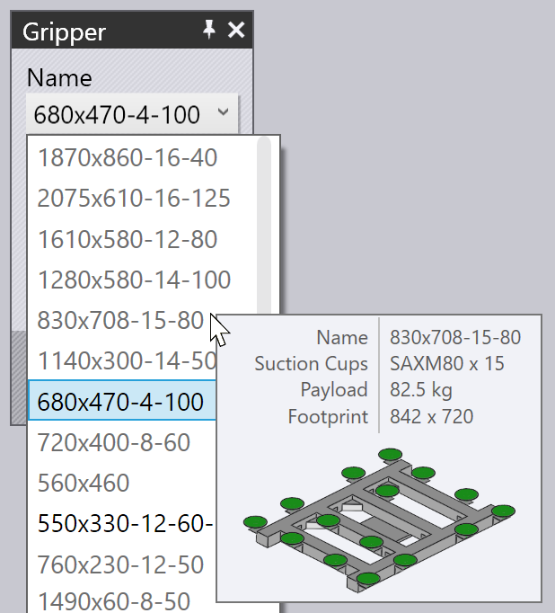

Pickup from Pallet
When a vacuum suction or magnetic gripper is use, blanks (flat parts) are picked up from a pallet. These parameters influence this process:
-
The position of the pallet in the machine cell.
-
The position and orientation of the part stack on the pallet.
-
The position and orientation of the suction gripper on the part.
-
The suction cup configuration of the gripper (which cups are turned on/off, and what type of cups are mounted in each socket).
-
The areas of the part that are imaged by the camera on the robot, and used as references for calibrating the part’s position.
The panels used to edit all these settings are displayed below - they are all interconnected by up/down navigation links leading to other panels in a logical sequence:

As the image above shows, these panels can also be accessed easily by just clicking on various objects in the simulation:
-
To open the Pallet panel, click on a pallet.
-
To edit the part-stack on a pallet (the Pickup panel), click on the blanks lying on the pallet.
-
To edit the gripper position on the blank (the Gripper panel), click on the gripper.
-
To edit the suction cup configuration of a gripper (the Suction panel), click on one of the suction cups.
-
To edit the imaging positions (used by the fine-position recognition system), click on the camera.
Pallet Panel
The Pallet panel is used to select a pallet and position it in the cell. You can open this panel by just clicking on a pallet; Flux will also position the simulation timeline so that the robot is posed at the point of picking up the part from the pallet.

-
Use the Name choice to select a different pallet. Normally, only pallets that are usable for this blank are listed, but you can turn off the Filtered check and then all available pallets are listed.
-
Moving the mouse over a name in the names list displays a quick summary of that pallet, along with a thumbnail:

-
Use the Position inputs to position the pallet in Z and X (in cell coordinates), and use the Angle input to rotate the pallet. As you move or rotate the pallet, the part stack on the pallet, and the gripper/robot all follow the movement.
-
Use the Next and Prev buttons to navigate to the other pallets in the cell; for example the pallet with the part deposit operations.
-
Use the Pickup navigation button to edit the position of the part-stack on the pallet.
-
Use the Save Config button under the Advanced section to save this cell configuration (including all pallets) as a default for this machine.
Pickup Panel
The Pickup panel is used to edit the position of the part-stack on the pallet. You can open this panel directly by clicking on the stack of blanks lying on the pallet. (You can also access it using the Pickup link from the Pallet panel).

-
Use the Position inputs to position the stack on the pallet; these coordinates specify the center of the part in Z and X, relative to the corner of the pallet, and are in the pallet’s local coordinate space.
-
Use the Angle input to rotate the part around in the pallet.
-
Use the Flip part switch to flip the part over. Note that this will usually mean that an additional regripping operation will be necessary before the first bend can be processed (this will be added by TecZone Bend automatically).
-
Use the Camera link to switch to the Camera panel, where you can set up the image recognition phase of the pickup.
-
The Waypoints link brings up the Waypoints editor where you can fine-tune the robot trajectory during pickup.
-
The RG-Stations link brings up the Regrip Station panel where you can configure the position of the regrip station during the pickup operation.
As the part is moved around on the pallet, the gripper remains stuck to the part and the robot follows the movements.
Gripper Panel
The Gripper panel is used to select a different gripper, or to change the position and orientation at which the gripper picks up the part.
-
Use the Name choice to select a different gripper. Normally, only grippers suitable for this part are displayed (based on gripper size and payload), but you can turn off the Filtered check and then all the grippers are listed.
-
Moving the mouse over a name in the grippers list displays a summary of that gripper, along with a thumbnail:
 -
Use the Position inputs to move the gripper-center relative to the part-center, and use the Angle input to rotate the gripper, relative to the part’s orientation.
-
Use the Suction link to switch to a fine-editing of the gripper (selecting different suction cups, switching cups on/off).
-
The Set Grip Plane button can be used to position the gripper on a different plane. Normally, the largest plane in the model is used to position the gripper. If you want to change this, click this button. Then click on the plane where the gripper should be positioned:

-
The Use Jaw Gripper button is used to switch this part to using the part dispenser and the jaw gripper (mechanical gripper). All stages of the bending cycle from pickup to deposit are recomputed using the jaw gripper[1].
Suction Warnings
If the gripper is moved so that some of the suction cups lie off the sheet, or are placed over holes in the part, the cups get highlighted, and an error appears in the
Pickup column of the navigator, as shown in the image below:

Actions Menu
The Actions button is used to call up a menu that provides some useful actions on the gripper:
-
Auto-place: Shift Tries to reposition the gripper over the part, ensuring all the suction cups lie within the part, and not over any holes (if possible).
-
Turn off leaking cups: Switches off all suction cups that are lying over holes, or are outside the boundaries of the part[2].
-
Turn on all cups: Turns on all suction cups that are turned off.
-
Save Config: If you configure the gripper by turning off or removing some suction cups, or by changing the arm lengths or angles (for MultiGrippers that can change shape), you can save the altered configuration of the gripper with a new name, for easy reuse.
-
Export Gripper: Save the current gripper as .fxbgrip file that can be imported into another installation of TecZone Bend. This is useful if you have imported a custom gripper and need to share it with other installations.
Suction Panel
The Suction panel is used to configure the suction-cup layout of a gripper. You can open this panel by clicking directly on a suction cup, or by choosing the Suction link from the gripper panel.

-
Use the Cup # choice to select a particular suction cup in the gripper, or use the Next and Prev buttons to navigate through the suction cups. The selected suction cup is highlighted in blue and can be edited.
-
For each suction cup, you can set the State to On, Off or Removed. See the description below for more details on this.
-
Use the Type panel to change to a different type of suction cup. Usually, one changes all the suction cups in a gripper to the new type, but you can also mix-and-match suction cups by turning off the Change All button and then changing the suction cups. (Note that when you do this, the choice of suction cups will be restricted, since all the suction cups mounted on a gripper frame must have the same working height). The image above shows two of the suction cups replaced with smaller ones (SAXM50, instead of the default SAXM80).
-
Use the Reset button to restore the gripper back to its original state - all suction cups are turned on, and are reset back to the default cup type that is defined in the gripper.
The default state for a suction cup is On, which means the suction cups is connected to the vacuum line, and helps in lifting.
If a suction cup lies over a hole in the part, you can change the state to Off, which means no vacuum. (This reduces the lift of the gripper, and changes the center-of-lift, which Flux takes into account to do gripper capacity checks). Note that the cup is still mounted in the frame, and participates in collision checks. Flux displays switched-off suction cups as wireframes, as you can see with two of the suction cups in the image above.
Finally, you can set a suction cup to Removed, which means the cup has been removed from the frame in the actual machine. There is no lift from this cup, and it will not cause a collision. This is sometimes useful if a cup falls over a formed region, or causes a collision with the die or machine table during operation.
Camera Panel
The pickup process requires one or more images to be captured by the camera, and an image-processing system than uses these images to estimate exactly where the part is on the pallet. Clicking on the camera mounted on the robot, or choosing the Camera navigation button from the Pickup panel opens up the Camera panel. Flux also positions the simulation so the robot is in the pose required to capture the image:

-
Use the Index list (or the Next and Prev buttons) to cycle through the various fine-recognition images being used for this part. As you do this, Flux displays an orange outline that shows the image-recognition zone on the part (see the image above).
-
Use the Position inputs to re-position this zone in Z and X to better include some features of interest that can improve the recognition accuracy (corners, small holes, notches).
-
Use the Add button to add an additional recognition image (up to 4), and use the Remove button to remove the current recognition image. During the simulation of the part-pickup, Flux shows the robot moving to each of these recognition areas with the camera down and pausing to acquire the image.
If the Use backlight table switch is turned on, then the part is transferred to an illuminated table before the camera is used to image it. This increases contrast and is useful for highly reflective parts. TecZone Bend adds the backlight table and positions it near the pickup pallet automatically, but you can then configure the position by clicking on it: